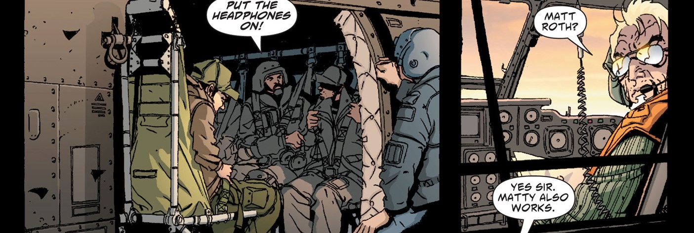

ground : terrain
marks : marques
fifth : cinquième
outbreak : déclenchement, épidémie
between : entre
so-called : soi-disant, prétendu
it is also : c'est aussi, c'est également
the third : troisième
ceasefire : cessez-le-feu
despite : malgré
predictions : prédictions
it appears : il semble
to be holding : tenté d'esquiver,pour être tenus, tenir
for how long : pour combien de temps
remains to be seen : ça reste à voir
well deserved : bien mérité
for being: pour etre
indiscriminate : avaugle, sans discrimination
uncivilized : sauvage
the white house : la maison blanche
branded : étiqueté, marqué
thugs : voyous
murderers: meurtriers

expressed faith : accorder sa confiance, exrpimer sa foi
in this most recent: dans ce dernier
all of the characteristics : l'ensemble des caractéristiques
deal : accord
for the few remaining : pour les quelques restants
beleaguered : assiégé
formal : officiel, solannel
looters : pillards
roving gang : gang itinérants / bandes de vagabonds
insurgents : insurgés
in the making : en fabrication, en devenir
beleaguered : assiégé
never before : jamais auparavant
life over there : la vie là-bas
remains : reste
intends to unravel : a l'intention de démêler, vise à élucider
in regard to safety concerns : en ce qui concerne les problèmes de sécurité
holds : tient, détient
pledge : promesse, engagement
they should be : ils devraient être
safe : sûr
broadcast : diffusion
twice daily : deux fois par jour
tune : accorder, mélodie, regler
tune in then : restez à l'écoute
unforgettable : inoubliable
broadcasting : diffuser
mortar attack : attaque au mortier
airstrike : frappe aérienne
await further instructions : attendre d'autres instructions
tech internship : stage technique
rush : se ruer, se précipiter